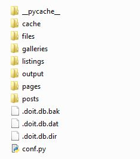

Get started with ERPNext
Write your post here.
Write your post here.
Write your post here.
What you will learn 1. Export Gerber files from Eagle 2. CAM process with Flatcam 3. Machine specific G-code 4. Milling the PCB
Previous post Flatcam installing . Today, I'll show you the process of making 2-layer PCB.
Follow this tutorial Using Python virtual environment with Anaconda. Then open up your new environment terminal. Make sure it is python 2.7 by:
python -V
Install packages:
pip install matplotlib pip install pypiwin32 pip install pywin32 pip install svg.path pip install scipy
note : Numpy already existed in the Anaconda environment. Use this command to check available package:
pip freeze
These packages are for Windows user. The .whl file is a pre-compiled package with its dependencies included. Simply download the following Python 2.7 64-bit packages and navigate your terminal to the containing folder.
Run this command to install the packages:
pip install <package's name>
From original requirements , it suggests Python 2.7 32-bit. I have not found any problem using Python 2.7 64-bit version.
navigate your terminal to where you want to put the clone and run this:
git clone https://bitbucket.org/jpcgt/flatcam cd flatcam python flatcam
Enjoy the Flatcam ! This is not stable release and may contain bugs, use it at your own risk.
Anaconda is an easier way for beginner to lean Python. We can create Python virtual environments for both 2.7 and 3.6 without messing around with the system PATH. In fact, you don't even need Administrator privilege. Moreover, you can manage Python modules through the GUI package manager. There are other useful tools such as Spyder IDE and Jupyter Notebook which we will talk about in the future. In Introduction to Nikola , I created an environment using virtualenv and virtualenvwrapper-win packages which is fine, but there is a simpler method. Let's get started.
Download latest version of Anaconda . I installed the Python 3.6 version. However, you still can create Python 2.7 environment.
Anaconda Navigator.
From the left, select Environments tab and create new environment with python 3.6 as show in figure below.
Creating new Python 3.6 environment.
Start the environment terminal
Terminal with Python virtual environment.
Install Nikola package:
pip install --upgrade "Nikola[extras]"
Assuming you already created a github.io repository following the instruction from this link https://pages.github.com/ and already install the 'Git<https://git-scm.com/downloads>'_ software according to your operating system. Given the original 'github_deploy<https://getnikola.com/handbook.html#deploying-to-github>'_ tutorial, I will explain more where you might get confused.
Initialize a git repository in your Nikola source directory by running:
git init. git remote add origin git@github.com:user/repository.git
so the command should be:
git remote add origin git@github.com:deadbeef/deadbeef.github.io.git
Then, setup conf.py:
GITHUB_SOURCE_BRANCH = 'src' GITHUB_DEPLOY_BRANCH = 'master' GITHUB_REMOTE_NAME = 'origin' GITHUB_COMMIT_SOURCE = True
Create a .gitignore file containing:
cache .doit.db __pycache__ output
Finally, deploying:
nikola github_deploy
first time it will ask you to log in to your github account. Then, you should be able to access you website https://deadbeef.github.io
By default your homepage is the main blog page showing all your posts. If you prefer the default homepage, simply skip this step. Use your favorite editor to create index.html file in the "pages" folder. This will be your main page. Now edit it as you want. You can see source code of my main page by clicking "Source" at the top-right corner of my website. Alternatively, go check all my source project in my Github src branch of this repository. You just need to do the body part as the header and footer will be added by the compiler according to the template.
Body part in the red box.
in conf.py edit the following parameters to tell compiler to put the main blog page to sub-folder blog:
INDEX_PATH = "blog"
and to build the html page at main directory. The page.tmpl is the template that we will edit later:
PAGES = (
("pages/*.rst", "pages", "page.tmpl"),
("pages/*.md", "pages", "page.tmpl"),
("pages/*.txt", "pages", "page.tmpl"),
("pages/*.html", "", "page.tmpl"),
)
Now you should have similar page like mine without those graphical icons which require 3rd party library. As I am using Cerulean theme, yours might look different. We will change the theme soon.
For example:
NAVIGATION_LINKS = {
DEFAULT_LANG: (
(( ("/blog/","Timeline"),("/pages/lst-ex/","List of examples") ), "Blog"),
("/archive.html", "Archive"),
("/categories/", "Tags"),
("/rss.xml", "RSS feed"),
("/pages/about-me/", "About"),
),
}
Choose your favorite theme from https://bootswatch.com/ then run this command with your favorite theme's name, for example, "cerulean":
nikola bootswatch_theme -s cerulean
Now your new theme is installed. You can modify your theme by tweaking in to the css file inside your new theme folder. In this case
theme/custom/asset
But we will get into that later. Now let's edit the templates by copying them from the base theme, in this case, bootstrap3:
nikola theme -c base.tmpl nikola theme -c base_helper.tmpl
This makes a copy of templates which overrides the parent template Bootstrap3. Firstly, have a look at base.tmpl, by default nikola inverse the navbar color. You can change navbar color to default.:
<nav class="navbar navbar-default navbar-static-top">
In base_helper.tmpl we add a graphic library font-awesome. Go to https://fontawesome.com/get-started and copy code similar to below and put it to roughly line 112 where you see other ccs libraries added:
<link href="/fontawesome/fontawesome-all.css" rel="stylesheet">
Now you can use icons on your pages
Now let's generate an empty site with any name such as "my_first_site". Navigate your terminal to the directory that you want to put your project folder on. Then run this command and follow its instructions:
nikola init my_first_site
Then create your first post and it will ask you to input post title. Your post file .rst will be created in "posts" folder. We will edit the post later:
nikola new_post
Build your website:
nikola build
Let's see your empty website on the browser. The -b option will open your default web browser automatically:
nikola serve -b
Press Ctrl+C to stop your web server.
After the initialization, you will get folder like this.
| Name | Description |
| files | Everything in here will be copied to your output folder. |
| galleries | Put your images folder here to generate gallery page. |
| listings | Put your code here to show it. (Learn more ) |
| output | Your generated website. |
| pages | All your pages are kept here. |
| post | All your posts are kept here. |
| conf.py | settings for Nikola. |
Next post, we will customize our site.
Nikola is a static site and blog generator written in Python. Nikola-based sites don't run any code on the server, there is no way to process user input in forms. You can have animations, slides or whatever fancy CSS3/HTML5 thingie you like. It only means all that HTML is generated already before being uploaded.
On the other hand, most "modern" websites are dynamic in the sense that the contents of the site live in a database, and are converted into HTML only when a user wants to see the page. However, on dynamic sites, every time a reader wants a page, a whole lot of database queries are made. Then a whole pile of code chews that data, and HTML is produced, which is sent to the user. All that requires CPU and memory.
On a static site, the highly optimized HTTP server reads the file from disk (or, if it's a popular file, from disk cache), and sends it to the user. You could probably serve a bazillion (technical term) page views from a phone using static sites.
Using Nikola on Windows can be a little trickier. Most tutorial out there are mostly based on Linux and MacOS. As a Windows user, I sometime failed to follow those tutorials. However, you will just have to get through it once then you will be fine. Let's get started.
Nikola runs on Python. So we need to install Python and necessary modules. All the modules will be installed inside an isolated Python virtual environment with it own libraries and site-packages. Virtual environment allows you to work on more than one project separately.
Note that I am using windows. Some command-line syntax may differ from other operating systems. There are several ways to install modules on Python. If you are interested in this topic, I would recommend you to check this out https://www.youtube.com/user/sentdex
Download and install the latest version of Python at https://www.python.org/downloads/release/python-361/
Install virtualenv module by running this command in you terminal. In this case, the Windows command line (Start>cmd):
py -m pip install virtualenv
Install virtualenvwrapper-win. Using the virtualenv through this wrapper is much easier:
py -m pip install virtualenvwrapper-win
Create a virtual environment with any name such as "nikola":
mkvirtualenv nikola
Install Nikola package:
pip install --upgrade "Nikola[extras]"
Now you are ready to generate the first website. The next post will teach you how to genrate a static website. I would reccomend you to check out your new environment folder at C:/Users/[username]/Envs. Also learn more about the virtualenvwrapper command on their mainpage.
Note
UPDATE 2018-05-15 : I have found a simpler way to create virtual environment and manage packages here